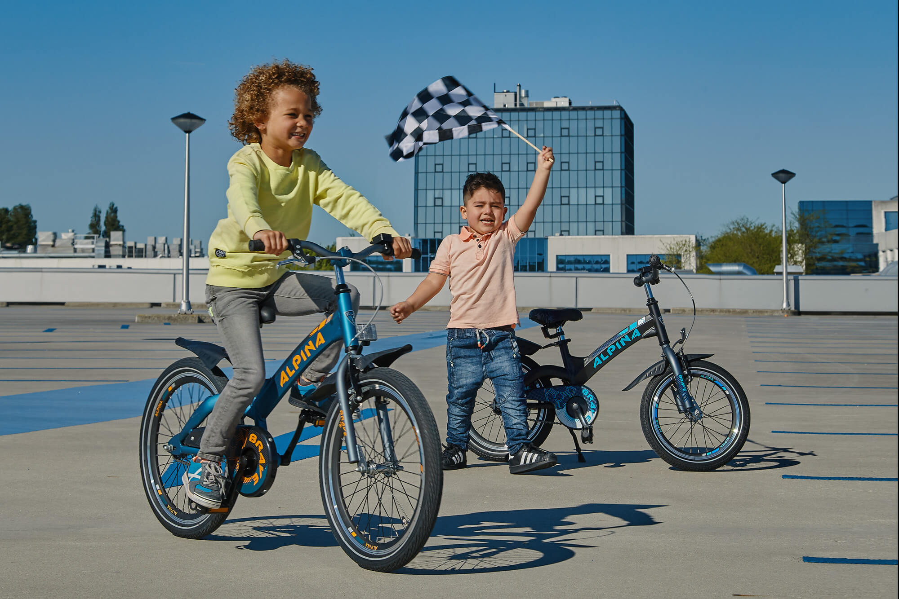

De Biky Club
De Biky Club is dé plek waar kinderen leren hoe cool fietsen is. Via de Biky Club versturen wij leuke weetjes over fietsen, organiseren we wedstrijden wie de mooiste foto maakt terwijl hij/zij aan het fietsen is of zetten we een gave speurtocht uit die je kind, natuurlijk, per fiets kan afleggen. Via deze en tal van andere leuke dingen leren wij kinderen op een speels en educatieve manier welke mogelijkheden de fiets heeft. Kinderen die op een Biky fietsen worden gratis lid van deze coole club :) !
